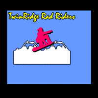

|
| ||
|
| ||
The following article was originally published in the Site Builder Network Magazine "More or Hess" column. (Now MSDN Online Voices "More or Hess" column.)
The World Wide Web consortium (W3C) has just released the first public draft for CSS2 Cascading Style Sheets 2  (CSS2).
(CSS2).
The 173-page draft looks thoroughly at all aspects of style
sheets for CSS implementers and CSS authors -- everything from an update on CSS syntax and
positioning, fonts and attributes for font
embedding  to aural
style sheets
to aural
style sheets  . (Aural styles use a combination of speech synthesis and
"audio icons" to provide an alternative presentation for blind and
print-impaired communities.)
. (Aural styles use a combination of speech synthesis and
"audio icons" to provide an alternative presentation for blind and
print-impaired communities.)
You May kill a small tree printing this draft out, but for CSS buffs, such a plethora of valuable, new and updated information is worth reading.
Chapter 14 of the draft discusses the standard way in which font embedding can be implemented via CSS. Note in particular the discussion in Chapter 14, Section 3 of the different ways to select fonts when using CSS, and, in the next section, how the font description is defined and where the font data comes from when using the @font-face definition.
The CSS @font-face definition is currently being used to implement two different types
of font-embedding technologies. One technology is from Microsoft and the other from
Bitstream Inc. I recently asked the Microsoft Typography team to outline the fundamental
differences between Bitstream's font-delivery technology, which is called TrueDoc  and is part of Netscape Communicator,
and Microsoft OpenType font embedding, which is part of Microsoft Internet
Explorer 4.0
and is part of Netscape Communicator,
and Microsoft OpenType font embedding, which is part of Microsoft Internet
Explorer 4.0  . Here's what I learned:
. Here's what I learned:
File size: TrueDoc records only the outlines of the fonts. These are compressed and stored in the Portable Font Resource (.pfr) file. For this reason, their font objects will be smaller than the equivalent Embeddable Open Type (.eot) file containing the same glyphs from the same font.
Quality: Since TrueDoc's .pfr file contains only outlines, and has no hinting information, the glyph bitmaps generated from the .pfr will be less legible on the browser. Bitstream compensates for this problem by anti-aliasing at all sizes (in essence, blurring out the problems) and autohinting the outlines. Microsoft has done lots of research into autohinting, and has not been able to achieve an acceptable quality of output using this technique.
Microsoft's solution is pretty much Internet Explorer 4.0 WYSIWYG. What you see in Internet Explorer 4.0 using locally installed fonts will be exactly what the reader sees when using the embedded fonts (as long as the Web Embedding Fonts Tool (WEFT) has done its job properly).
Speed: Decompression and autohinting take time. Netscape and Bitstream have, in effect, built a font-rasterizer into the browser, instead of using the TrueType rasterizer that's built into Microsoft's Windows operating systems and the Macintosh. This makes TrueDoc pretty slow at rendering, compared to OpenType, and Netscape's rasterizer can't handle anti-aliasing to complex background patterns such as other fonts, or graphics, or both.
Microsoft has always said that the operating system, not the browser, should handle such tasks as rasterizing and anti-aliasing. Duplicating them adds to the size of the browser, and will always be slower than the operating system.
IP: Bitstream never refers to its technology as embedding. As many in the font community have noted, Bitstream has, in effect, invented a new font format (PFR), which uses font outlines taken from existing fonts, and sometimes without permission from existing fonts.
Microsoft's font embedding has also come under criticism because a clever hacker May work out how to extract reusable outlines from an .eot file. However, Microsoft's font-embedding strategy differs from Bitstream's in that Microsoft's leaves it up to the designer at a type foundry to decide what embedding permissions to give the font. The designer May well conclude that the greater sales to Web developers that result from enabling embedding are worth any sales lost to hackers or digital pirates. But if the designer prefers, he or she can instead opt to set the fonts to no-embedding.
If you are building a channel
 for Internet Explorer 4.0, now is the time to experiment with font
embedding. You can create rich typographical imagery on your channel or use particular
typefaces in your graphics. And now you can stop using heavy graphics to portray
typographical effects, relying instead solely on CSS and font embedding to add lightweight
text to your designs.
for Internet Explorer 4.0, now is the time to experiment with font
embedding. You can create rich typographical imagery on your channel or use particular
typefaces in your graphics. And now you can stop using heavy graphics to portray
typographical effects, relying instead solely on CSS and font embedding to add lightweight
text to your designs.
Detect Browsers from the client: If you target specific content for different browsers, be sure to take advantage of this situation and use font embedding on pages that the server delivers to users with Internet Explorer 4.0. Or you can add script to your html page to display particular content for different browsers. Below is a sample with some simple script on the page that determines the browser type from the user-agent string and displays the content appropriately. I created the font embedding files using the Web Embedding Fonts Tool WEFT tool (see description at left).

 Click this image to view the sample page with client-side browser detection.
Click this image to view the sample page with client-side browser detection.
About the sample page: If your browser is Internet Explorer 4.0  , you will get a lightweight HTML page (3K)
that uses font embedding for all the graphical elements. The page uses two font objects,
one for the title font (Mistral, 6K, .eot file), the other for the mountains and
snowboarder, created with the WebDings font (5K, .eot file). For browsers not enabled for
font embedding, a .gif file (13K) is displayed.
, you will get a lightweight HTML page (3K)
that uses font embedding for all the graphical elements. The page uses two font objects,
one for the title font (Mistral, 6K, .eot file), the other for the mountains and
snowboarder, created with the WebDings font (5K, .eot file). For browsers not enabled for
font embedding, a .gif file (13K) is displayed.
Detect browsers from the server: You can also do user-agent string checking from the server, and send out a completely separate page, based on the browser visiting your site.
 Click this image to view the sample page with server-side browser detection.
Click this image to view the sample page with server-side browser detection.
About the second sample page: This is almost exactly the same as the first sample above, but in this case the browser detection occurs on the server (in this case, an Internet Information Server using Active Server Pages technology). As with the sample page above, browsers not enabled for font embedding will display a .gif file (13K).
About browser detection: For a good how-to explanation of browser detection on both the client and server sides, see the section headed Browser Detection in the technical article Authoring Strategies for Internet Explorer 4.0 and 3.0 in the MSDN Online Web Workshop.
The World Wide Web Consortium  has up-to-date information on CSS2 and other CSS news and resources.
has up-to-date information on CSS2 and other CSS news and resources.
The Microsoft Typography team provides detailed information relating to typography on the Web, free Web fonts to download, the WEFT tool, information about font-embedding technology, and much more.
Lynda Weinman
 discusses issues surrounding typography on the Web.
discusses issues surrounding typography on the Web.
Nadja Vol Ochs is the design consultant in Microsoft's Developer Relations Group.
First, I recommend a visit to the humorous Disagreeably
Facetious Type Glossary Hinting: Autohinting: Computer-generated instructions (hints), as opposed to manually
defined ones. Microsoft fonts are hinted by hand because we believe the human eye should
have final say in what looks right and produces better results. Although autohinting
reduces the workload in font production, we've yet to see autohinted fonts that come
anywhere close to the quality a well-trained type engineer can attain. OpenType™: Anti-aliasing: Rasterizing: A process for converting a vector primitive or outline-based image (such as a letter from a font) into a bitmap image at a certain size. EOT: Embedded OpenType file. Can be generated by the WEFT tool (below), has the MIME type of .eot, and encapsulates font subsets. PFR: Portable Font Resource file. A data file, used by Bitstream TrueDoc, that includes font outlines from fonts. WEFT: Glyph: A single physical representation of a character. A glyph occupies a
unique code point in a font, and can comprise one or more characters. Example: An
"fi" ligature is one glyph, made up of the two characters "f", and
"i." Subset: A collection of characters from a font. To minimize the size of an
embedded-font object, a designer might include only the characters used on a particular
page or site, or only those required by a particular language. A subset May contain enough
glyphs to render a single page or a number of pages on a site. Let's talk type
 provided by the Microsoft Typography team,
whose Simon Daniels and Simon Earnshaw helped me compile the following glossary:
provided by the Microsoft Typography team,
whose Simon Daniels and Simon Earnshaw helped me compile the following glossary:  A method of modifying a glyph outline in order to specify precisely
which pixels are turned on for display. This helps create the ideal character-bitmap shape
at small sizes and low resolutions. Also known as "instructing."
A method of modifying a glyph outline in order to specify precisely
which pixels are turned on for display. This helps create the ideal character-bitmap shape
at small sizes and low resolutions. Also known as "instructing."  A universal typography solution, jointly developed by Adobe
Corporation and Microsoft. OpenType is a next-generation type format that streamlines font
management, provides richer formatting options, and includes an integrated Internet
publishing environment for font-embedding and management for Internet-based applications.
Unlike proprietary font-embedding technologies, OpenType is an open, freely licensable
solution for developers who want to build support into Web browsers and authoring tools.
The OpenType specification is also available on Adobe's
Web site
A universal typography solution, jointly developed by Adobe
Corporation and Microsoft. OpenType is a next-generation type format that streamlines font
management, provides richer formatting options, and includes an integrated Internet
publishing environment for font-embedding and management for Internet-based applications.
Unlike proprietary font-embedding technologies, OpenType is an open, freely licensable
solution for developers who want to build support into Web browsers and authoring tools.
The OpenType specification is also available on Adobe's
Web site  .
.  Minimizing the jaggedness of curved and diagonal letterform strokes by
applying intermediate shades of the foreground and background color to the edges of the
strokes. The result is a smoother, slightly blurred letterform. Microsoft calls this
process "font smoothing."
Minimizing the jaggedness of curved and diagonal letterform strokes by
applying intermediate shades of the foreground and background color to the edges of the
strokes. The result is a smoother, slightly blurred letterform. Microsoft calls this
process "font smoothing."  Web Embedding Fonts Tool, used to analyze Web pages, check embeddability levels of installed fonts, and create subsetted font objects that can be linked to Web pages. Note: The tool is still in beta release, and currently supports only TrueType fonts.
Web Embedding Fonts Tool, used to analyze Web pages, check embeddability levels of installed fonts, and create subsetted font objects that can be linked to Web pages. Note: The tool is still in beta release, and currently supports only TrueType fonts.
Photo Credit: Russell Illig/PhotoDisc; Neil Beer/PhotoDisc
Did you find this material useful? Gripes? Compliments? Suggestions for other articles? Write us!
© 1999 Microsoft Corporation. All rights reserved. Terms of use.